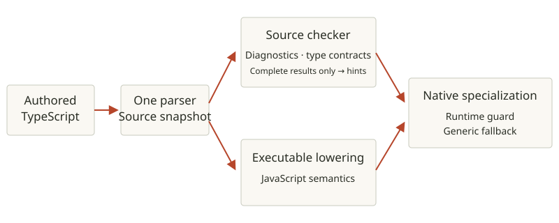

KILN / TECHNICAL REFERENCE
Check TypeScript. Compile native.
Source checking with pinned TypeScript 7.0.2 libraries and compatibility measured against reference diagnostics.
Check source before you compile.
kiln check hello.ts
kiln check --explain-parallel parallel.ts
kiln run hello.ts
kiln build hello.ts
./hellokiln check reports TypeScript source diagnostics. It reads project tsconfig options, including JSONC and extends, and package declaration targets. With no tsconfig it uses strict checks, esnext and module: preserve. Node and kiln declarations are embedded, including typed actors and parallel collection methods.
hello.tsDownload ↓
function sum(values: number[]): number {
return values.reduce((total, value) => total + value, 0);
}
console.log(sum([8, 13, 21])); // 42The checker is integrated with kiln’s parser and source snapshots. Its binding, inference, narrowing and type-relation algorithms are ported from Bun’s source checker, including the Microsoft checker and binder ports. It is a source checker, not just type stripping.
What “TypeScript 7” means here.
The standard declaration libraries are pinned TypeScript 7.0.2 inputs. Two separate reference suites measure diagnostics against TypeScript’s own tests and tsc 7.0.2.
| Highest matching level | Cases | Share |
|---|---|---|
| Exact output | 11,980 | 91.44% |
| Diagnostic spans | 9 | 0.07% |
| Message words | 57 | 0.44% |
| Error codes | 6 | 0.05% |
| Differs | 1,049 | 8.01% |
| Broken | 0 | 0.00% |
“Exact output” means the complete reference diagnostic output matches byte for byte. Partial levels measure spans, words or error codes; they do not imply an exact match. The differential suite matches 1,710 of 2,226 cases; the other 516 differ. These corpora measure tested cases, not full drop-in compatibility with every TypeScript project.
Types inform guarded optimization.

Authored source coordinates are retained for diagnostics. Complete checker results can supply compiler contracts; incomplete adaptation or exhausted checker budgets disable optimization hints. An annotation, any, or unchecked assertion is not a runtime proof. Specialized native paths keep guards and generic fallbacks.
Reproduce the compatibility checks.
mise run ts-conformance
mise run tsc-differentialThese contributor commands fetch pinned reference inputs and fail when a recorded case regresses. The checker integrates project configuration and module snapshots; adaptation gaps and integration limits remain explicit.
Checker architecture and limitsTypeScript conformance baselinetsc differential baseline